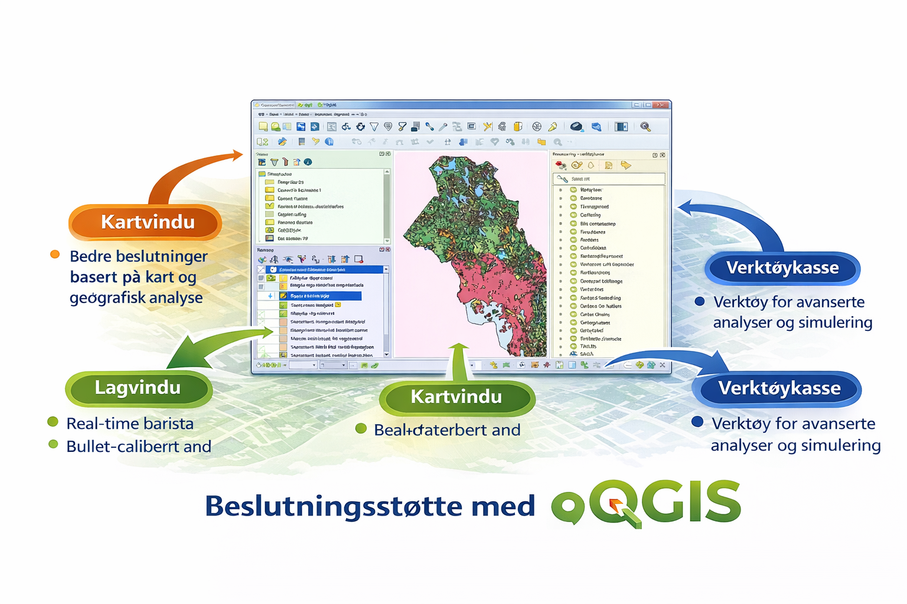
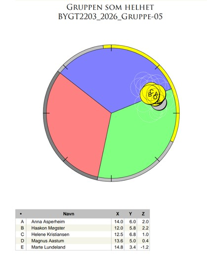
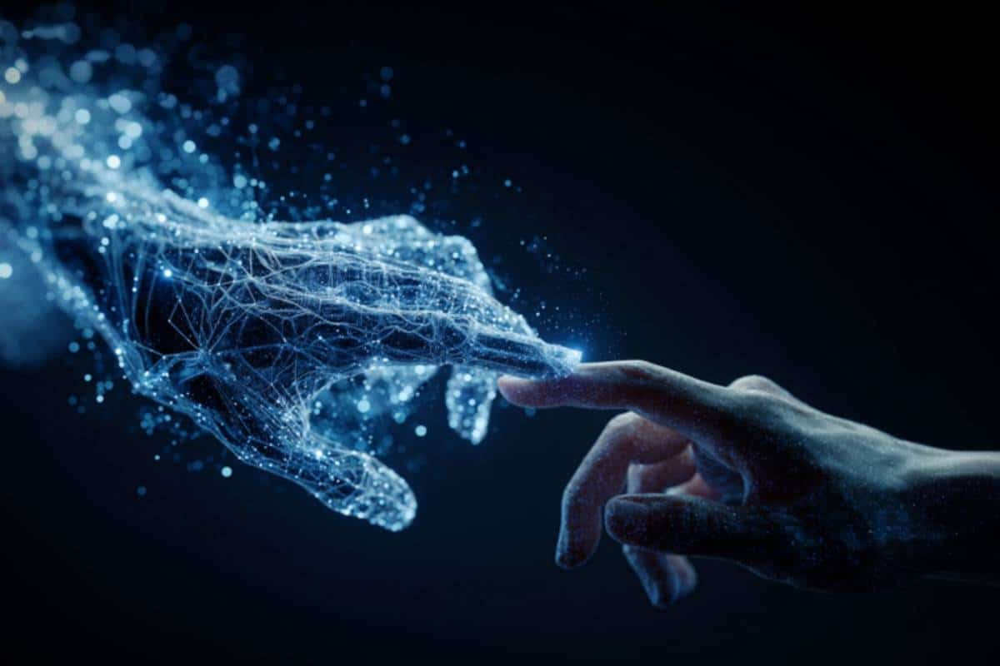
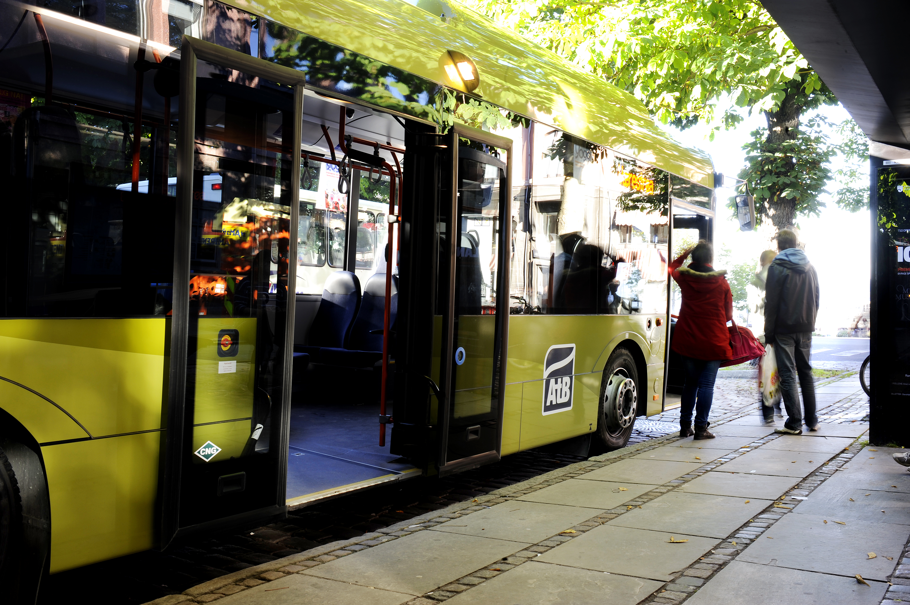

Om prosjektet
BetterWay er et studentprosjekt som tar utgangspunkt i utfordringer knyttet til busskapasitet i Trondheim. Målet er å gjøre kollektivtransport mer forutsigbar, tilgjengelig og brukervennlig for flere grupper i samfunnet.
Dette prosjektet tar utgangspunkt i de utfordringene kapasitetsproblemer i kollektivtransporten skaper for forutsigbarhet og tilgjengelighet. Fulle busser er ikke bare et spørsmål om komfort, men utgjør en vesentlig barriere for sårbare grupper, inkludert rullestolbrukere, synshemmede og personer med sosial angst. For sistnevnte gruppe kan trengsel og manglende oversikt føre til unngåelsesatferd og redusert mobilitet.
Selv om det eksisterer løsninger for kapasitetsvarsling basert på sanntidsdata og historikk, viser erfaring at disse systemene kan være teknisk sårbare og tidvis vanskelige å tolke for sluttbrukeren.
Prosjektets formål er derfor å utforske hvordan informasjon om bussens fyllingsgrad kan presenteres i en reiseapp på en måte som er både teknisk robust og brukervennlig. Ved å gi brukerne bedre beslutningsgrunnlag før reisen starter, er målet å øke den opplevde tryggheten og sikre et mer inkluderende kollektivtilbud.
Løsningen bygger på en digital tvilling som visualiserer kapasitetsnivåer på bussruter og gir brukeren et bedre grunnlag for å planlegge reisen sin.


Ideen vår
Ideen bak BetterWay er å utvikle en løsning som viser hvor fullt det er på bussen til enhver tid. På denne måten kan brukeren lettere velge når det er best å reise.
Dette er særlig nyttig for studenter, eldre og personer som opplever rushtid som utfordrende, for eksempel på grunn av sosial angst, redusert mobilitet eller behov for bedre tilgjengelighet.
For å estimere hvor mange passasjerer som befinner seg på bussen, benyttes automatiske passasjertellere (APC – Automatic Passenger Counting). Disse systemene er installert ved bussdørene og registrerer hvor mange som går av og på ved hjelp av sensorteknologi, som for eksempel infrarøde sensorer eller kamera med bildeanalyse.
Sensorene registrerer bevegelse gjennom dørene og beregner kontinuerlig antall passasjerer om bord basert på differansen mellom påstigende og avstigende. Dataene lagres og kan kobles til tidspunkt, holdeplass og rute, noe som gir både sanntidsinformasjon og historiske datasett.
I Trondheim brukes slike data av kollektivselskapet til analyse av trafikkmønstre og kapasitetsutnyttelse. I dette prosjektet benyttes denne typen data som grunnlag for den digitale tvillingen, hvor passasjerantall estimeres og visualiseres for å gi brukeren bedre beslutningsgrunnlag ved valg av buss og avgang.

Metode
I prosjektet har vi brukt QGIS og Python for å utvikle en digital tvilling av bussrute 3 i Trondheim. Modellen simulerer passasjerbelastning ved holdeplasser og visualiserer kapasitetsnivåer ved hjelp av fargekoding.
Oppsummering: Metode og fremgangsmåte
Dette prosjektet har benyttet en iterativ metodikk for å utvikle en digital tvilling av bussrute 3 i Trondheim, med særlig fokus på simulering av passasjerbelastning.
Arbeidet er strukturert etter VDC-rammeverket (Virtual Design and Construction), der integrert prosjektstyring (PPM), tverrfaglig samhandling (ICE) og digitale modeller (BIM) har stått sentralt.

Hovedverktøyet for utviklingen har vært QGIS
Ved hjelp av Python-skripting er det laget en dynamisk modell der bussens posisjon og passasjerantall endres over tid.
Siden sanntidsdata fra AtB ikke var tilgjengelig i prosjektperioden, er datagrunnlaget basert på syntetiske data generert med KI (ChatGPT).
Disse dataene er modellert etter holdeplassenes funksjonelle egenskaper, som for eksempel forventet rushtid i studentområder.

Legg inn bilde: images/metode2.jpg
Sentrale elementer i løsningen
Visualisering: En tidsbasert animasjon i QGIS viser bussens bevegelse, der regelstyrt symbolisering (grønn, gul og rød fargekode) indikerer ledig kapasitet og sitteplassgaranti.

Samhandlingsverktøy
Prosjektet har benyttet prosesskart, SPGR-analyser og Emosjonsdiamanten for å sikre effektiv gruppedynamikk og arbeidsflyt.

Legg inn bilde: images/metode4.jpg
Teknologi
Ulike KI-verktøy (ChatGPT, Gemini, Copilot) er brukt til koding og visuell utforming, mens Canva og Clips er benyttet til formidling av resultatene gjennom video og nettside.

Legg inn bilde: images/metode5.jpg
Løsningen fungerer som en prototype
Løsningen demonstrerer hvordan geografisk visualisering og sanntidsdata kan redusere kognitiv belastning og øke forutsigbarheten for kollektivtrafikanter.

Legg inn bilde: images/metode6.jpg- Rute og holdeplasser ble modellert i QGIS
- Python ble brukt til å simulere passasjerdata
- Visualisering ble laget med grønne, gule og røde indikatorer
- Nettsiden presenterer resultatene på en enkel måte
Utstyr vi bruker
Prosjektet bruker både programvare og digitale verktøy for å utvikle og presentere løsningen.
- QGIS til kart, ruter og visualisering
- Python til simulering og databehandling
- HTML, CSS og JavaScript til nettsiden
- GitHub og Vercel til publisering og videre utvikling
Videre utvikling
I videre arbeid ønsker vi å koble løsningen til reelle datastrømmer fra kollektivtransporten, slik at brukerne får sanntidsinformasjon om kapasitet og belastning på bussene.
Nettsiden kan også videreutvikles med interaktive kart, varslinger og bedre universell utforming. På sikt kan løsningen bli et nyttig verktøy for både passasjerer og kollektivselskap.
Erfaring og lærdom
Gjennom prosjektet har vi lært hvordan digitale verktøy kan brukes til å forstå og visualisere utfordringer i transportsystemer. Vi har også fått erfaring med samarbeid, modellering, koding og presentasjon av resultater.
Arbeidet har vist hvor viktig det er å kombinere teknisk kunnskap med brukerperspektiv, særlig når målet er å utvikle løsninger som skal være tilgjengelige for alle.